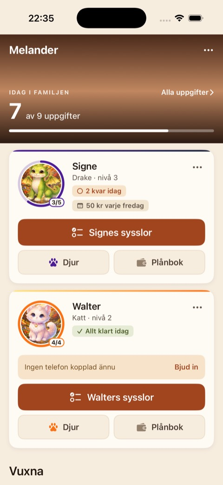
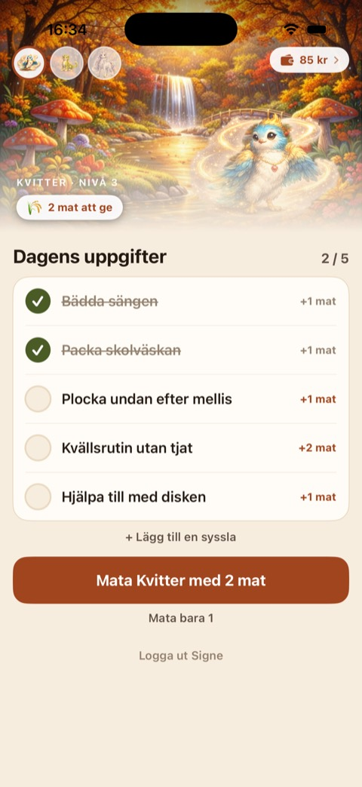
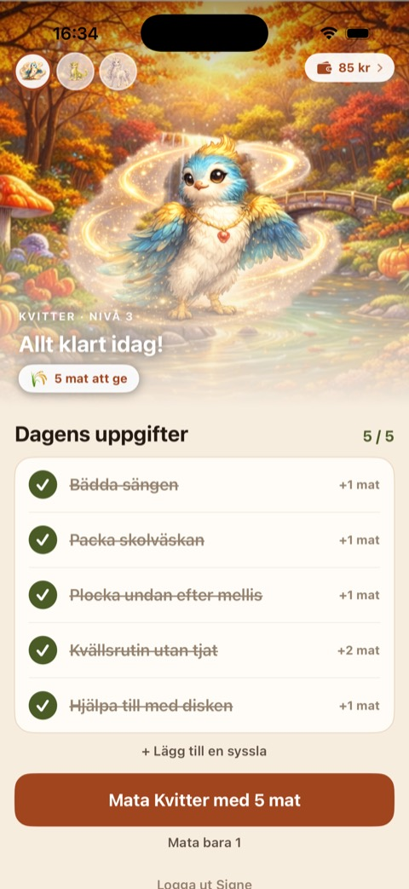

Barnen bockar av dagens sysslor och samlar mat till ett djur som växer. Varje månad kläcks ett nytt.

Föräldern ser hela familjen på en skärm

Barnet ser vad som ska göras idag

Och vad som händer när allt är klart
KidQuest är i sluttestning och kommer till App Store och Google Play inom kort. Vill du vara med redan nu går det bra — vägen dit ser bara olika ut beroende på vilken telefon du har.
Öppna länken på den telefon du vill testa på. Du behöver Apples app TestFlight, och länken hjälper dig installera den om du saknar den.
Hämta KidQuest via TestFlightTio platser totalt, först till kvarn. Möts du av att testet är fullt — mejla mig ändå, så hör jag av mig när appen släpps.
Här måste jag lägga till din Google-adress för hand innan du kan hämta appen. Mejla adressen du använder på telefonen, så ordnar jag det.
Be om en Android-inbjudanAnvände du KidQuest i webbläsaren? Webbversionen är avvecklad och ersatt av apparna. Ditt konto finns kvar — logga in i appen med samma e-postadress.
Barnen behöver en ny QR-kod. Barnets inloggning är knuten till enheten, så du får bjuda in dem på nytt från appen. Det tar en minut per barn.
Har du inte appen än, hör av dig på support@kidquest.se så ordnar jag en inbjudan.
Jag är en pappa som byggde KidQuest till mina egna barn. Det började som ett sätt att slippa tjata om tandborstning varje morgon. Appen utvecklas på kvällar och helger, och frågor besvaras av mig själv.